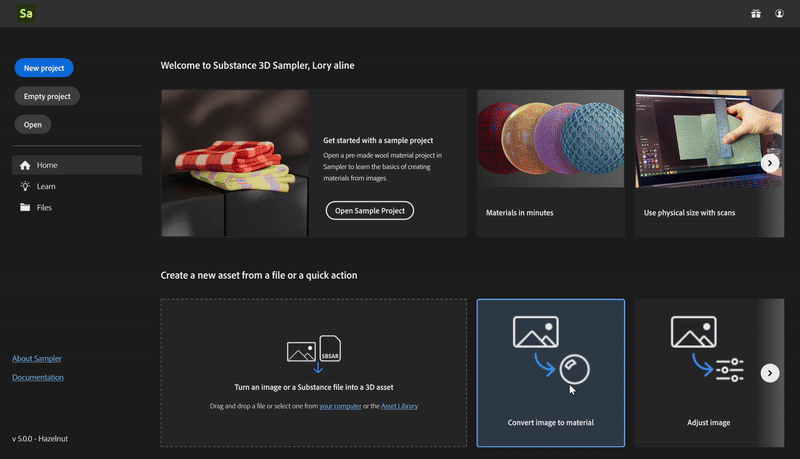
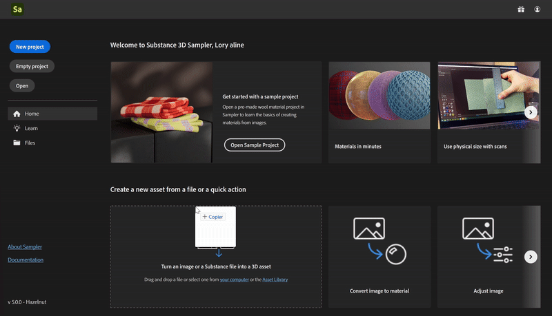
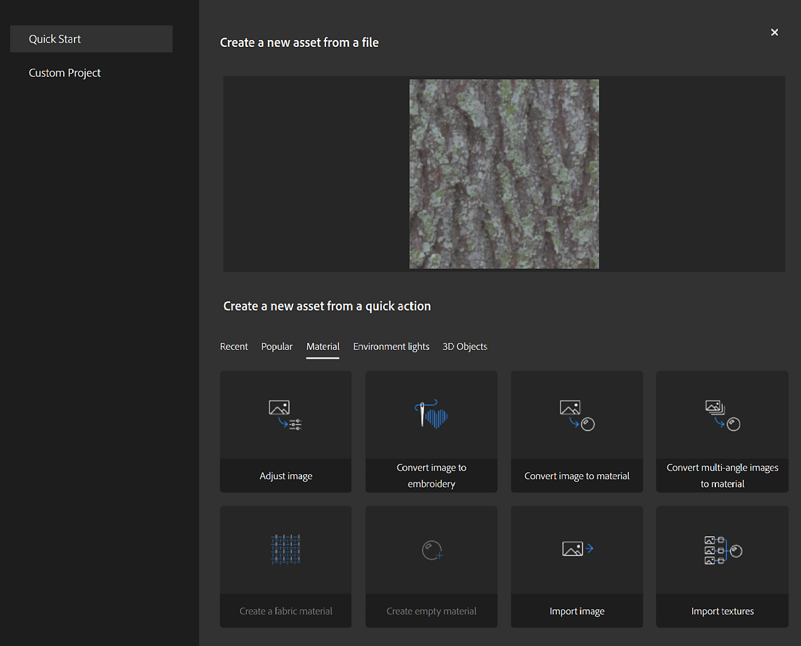

Quick Action Name
Quick actions is a system that allows you to create an asset or add many layers in the stack in few clicks. Use Quick actions to create an asset, create a project or to add the layers you need to your existing stack.
You can find Quick actions in several places in Sampler:
|
Quick Action Name |
Description |
Layers |
|---|---|---|
|
Convert image to material |
Create a material with all the necessary channels from a single image. |
Input Image to Material AI Equalize |
|
Convert multi-angle images to material |
Create a material by merging photos of a surface taken from different light angles |
input Multiangle to material Equalize |
|
Import textures |
Create a material from texture maps. |
Input |
|
Import image |
Create an empty material and add a single image as a layer. |
Input |
|
Import environment |
Create a light from an environment map or a picture. |
Input Exposure |
|
Convert 360 panoramas to HDR |
Create a High Dynamic Range (HDR) environment light by merging multiple 360-degree bracketed panoramic images. Learn more |
Input HDR Merge Straighten Horizon Nadir Patch |
|
Convert image to embroidery |
Apply a procedural filter to make an image look like an embroidered patch. |
Input Embroidery |
|
Create a fabric material |
Create a fabric material with a procedural filter. |
ClothWeave |
|
Adjust image |
Choose filters to fine-tune and prepare an image for use in a material. |
Input Crop Tiling Brightness/Constrast Hue/Saturation Color replace |
|
Create 3D Object from Photos |
Create a 3D model with photogrammetry, which stitches overlapping photos together. |
None |
|
Create empty material |
Create a material with no channels. |
None |
|
Create empty light |
Create an environment light with no channel. |
None |
From home screen
Click on a Quick action

or drag and drop an image on a quick action.

or drag and drop an image on a quick action.
From Create new
Choose any quick action or import files and see which quick actions you can use with your input

From Quick Action Panel
Click on a Quick action to add it to the stack or create a new asset depending on the Quick action type.
Options: